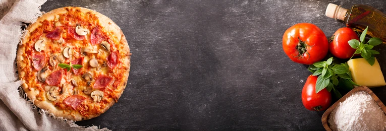

Manual de Instrucciones:
- Agarrar un bowl
- llenar dos tasas con agua a temperatura hambiente
- Tirar el contenido de las tasas al bowl
- Agregar al recipiente 3 gramos de levadura seca o 6 de levadura fresca
- Agregar una cucharada de azucar
- Mientras tanto en una sarten derretir 50 g de manteca
- luego agregar 500 g de harina 000 por encima del agua
- Ponerle a la preparacion 8 g de sal
- Tirar la manteca derretida por arriba de la mezcla
- Amazar la preparacion con nuestras manos o con la ayuda de cornet buscano intregrar todos inmgredientes hasta que quede una masa homogenea
- Cubrir el bowl con un trapo humedo que este limpio o con papel film para que eleve la masa
- Una vez que elevo dividir la masa en 2 partes iguales y luego relizar el bollado
- Luego de eso dejar elevar los bollos 1h 30min
- Mientras fermenta nuetra masa hacemos la salsa a gusto
- Agarrar nuestra pizzera y aceitarla
- Precalentar el horno
- Poner la masa en la pizzera y estirala hasta que llegue a los bordes
- Poner la masa en el horno precalentado
- Esperar 10 min para que la masa haga piso
- Sacar la masa del horno, ponerle la muzzarela y los demas inmgredientes que querramos para nuesta pizza
- Poner la masa nuevamente en el horno
- Luego que pasen unos 15 min sacarla del horno
- Desmoldar la pizza y ponerla en una superfiecio como una bandeja o tabla de madera
- Cortar la pizza en 8 porciones y a disfurtar